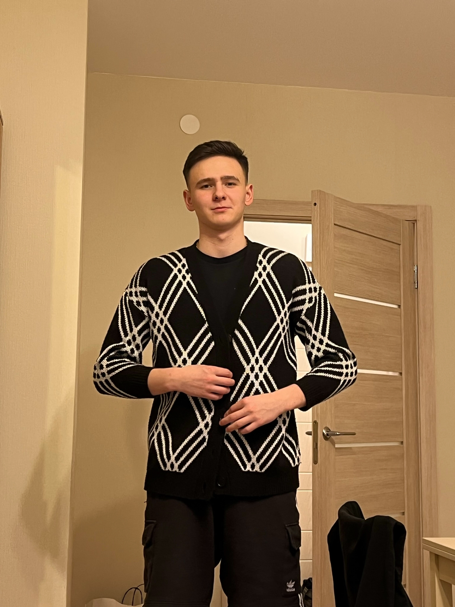
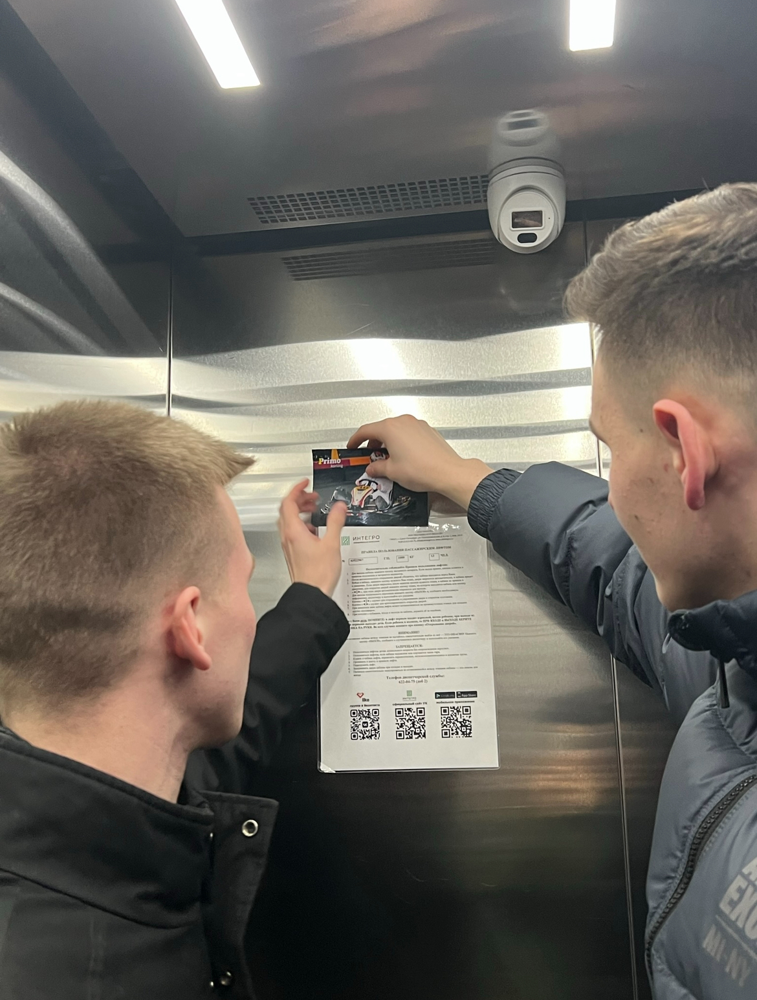
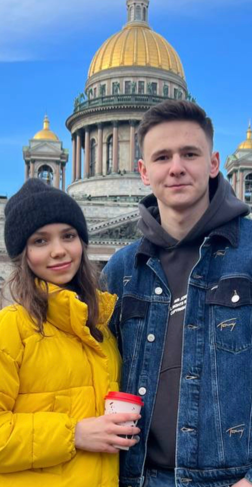
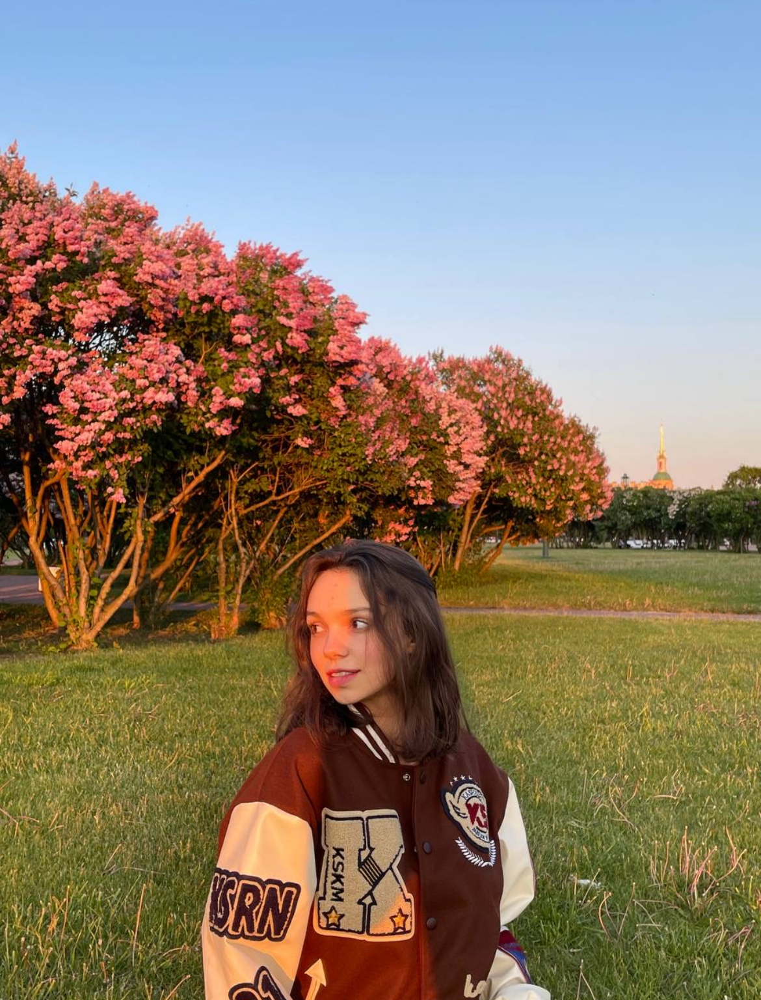
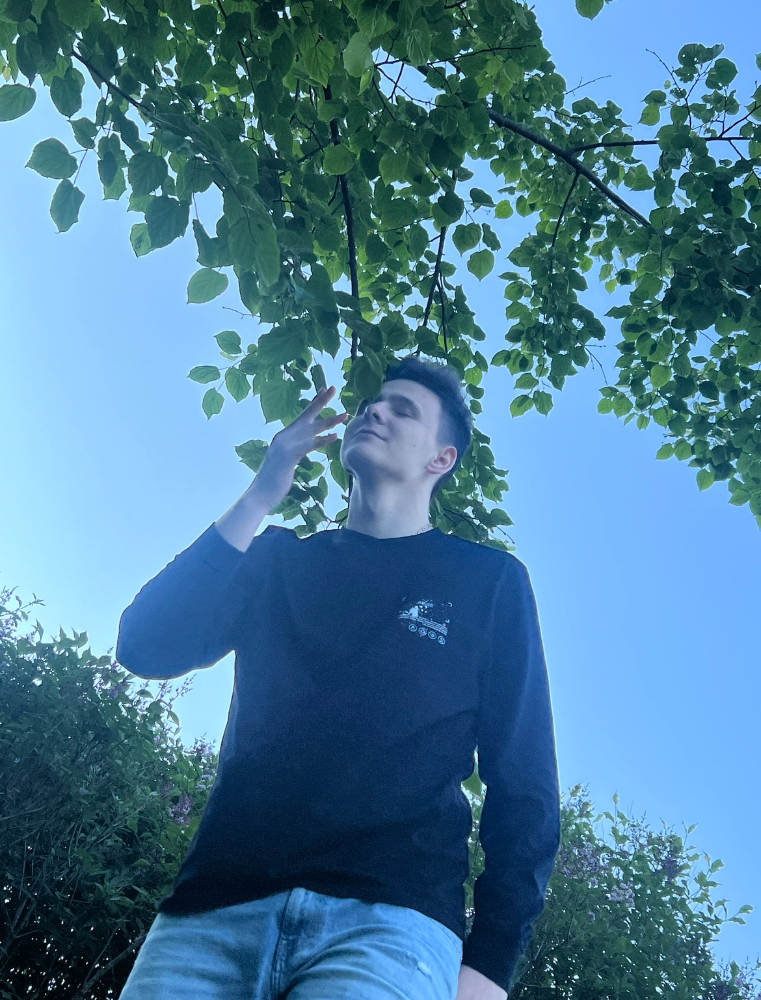
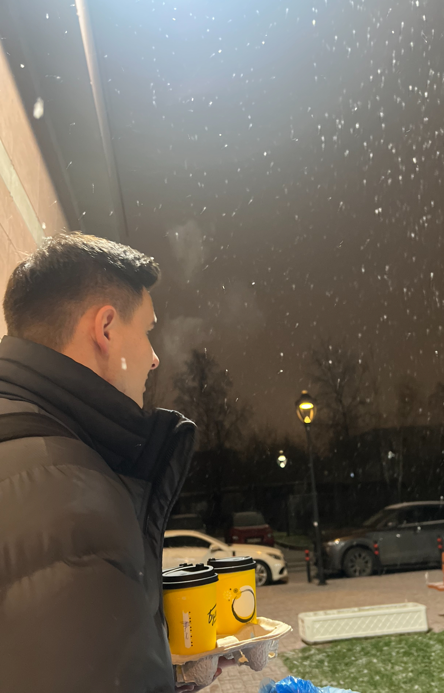
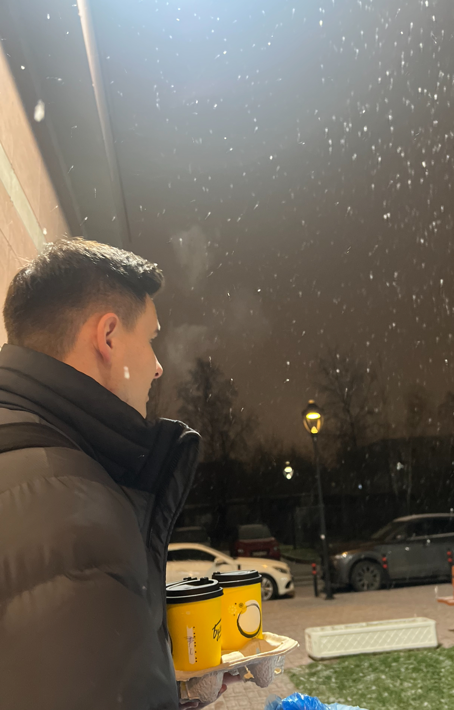

Честно, не знаю, чем объяснить мое необъятное желание преподносить тебе что-то нестандартное и с частичкой креативности. Но я уже давно видела в моем новогоднем поздравлении именно в формате электронной фотопленки с краткими пометками, как мы проводили вместе каждый из месяцев 2023 года. Признаюсь, что пришлось вспомнить парочку тегов html и изучить новые, чтобы осуществить задуманное. И да, к помощи нейросети прибегать не хотелось.

В январе наши отношения еще не были понятны, в них таился и флирт, и недоумение, и местами дружеское общение, и все это было сокрыто какой-то общей тайной. Мы с тобой впервые посетили вдвоём мюзикл «Алмазная колесница», впервые сошлись компаниями в баре, где достаточно эмоционально и насыщенно провели вечер, перепрыгивая с дружбы на статус настоящих отношений. Наше общение не замолкало даже ночью: мы охотно делились фотографиями друг друга, только создавая локальные мемы, которые понимали только мы. Мы любили задавать друг другу интригующие (местами провокационные) вопросы, превращаясь в философов-полуночников, пытающихся докопаться до глубин разума и восприятия друг друга. Я наконец-то приехала к тебе в гости, обещая об этом уже достаточно давно. И тебе всячески хотелось ко мне прикоснуться.

Февраль внес ясность между нами. Ты под покровом ночи приехал на другой конец города, чтобы увидеть меня и признаться в любви. Наше общение перетекло в новое русло. Поначалу мне было неловко, я немного ощущала себя не в своей тарелке, но постепенно начала к тебе привыкать, ведь ты был очень понимающим и заботливым, обращая внимание на мою некую скованность. Ты задаривал меня подарками, и на тот момент я даже представить себе не могла, что я могу быть центром стольких шикарных букетов цветов. Ты подкладывал мне милые записочки, которые до сих пор у меня хранятся на комоде, давая пространство, чтобы окунуться в приятную ностальгию.

В марте мы стали чаще делать совместные фотографии. 8 марта ты устроил мне лучший праздник, окружив множеством сюрпризов. В тот день я впервые позволила себе внести немного коррективов в ухаживание за твоим лицом, принеся с собой маску. Мы создали первое совместное видео, чтобы запечатлеть тот вечер. Шампанское, кремовый торт, фиолетовая подсветка и любовь. В марте мы любили прогуливаться по Питеру и осуществлять спонтанные поездки. Первой нашей целью стал Выборг.
В апреле ты вновь меня задаривал цветами, что уже становилось волшебной обыденностью. На наш день мы отправились в гончарную, сохраняя традицию необычных свиданий на 14 число каждого месяца. В апреле ты повел меня на концерт фараона, где я познакомилась с твоими музыкальными предпочтениями. Это было эффектно. Мы также впервые посетили боулинг, где ты продемонстрировал свое мастерство. Моя мама купила нам билеты в театр, где мы все втроём окунулись в искусство северной столицы.
Большинство дней мая мы провели порознь, но в дальнейшем успели восполнить это время. Я впервые решила завлечь тебя горячими фотографиями и каждый день делилась ракурсами мест, где видела нас отдыхающими вдвоем через пару лет. В мае мы провели замечательный семейный ужин все вместе, где ты прочно оставил приятное впечатление о себе у моих родителей.


В июне нас ожидала летняя сессия с нашим одним из самых сильных противников - СЭС. Но на тот момент мы особо не страшились, то и дело гуляя по Петербургу и посещая развлекательные мероприятия.

Июль мы провели в другой стране, совместным трудом справляясь с новой обстановкой. Мы знакомились с новыми людьми, валютными переводами, карьерными особенностями и устройством компании. Каждый наш день был четко распланирован. Мы посетили достопримечательности столицы Казахстана с обещанием вернуться в эту страну вновь.
В августе я впервые лично познакомилась с твоими родителями. Тобой была организована наша первая совместная фотосессия.
В сентябре нас новой волной настиг наш противник. Мы успешно сдали СЭС и облегченно выдохнули, оставив его позади. На пороге ждал новый семестр.
В октябре мы оба справляли наши дни рождения, переступая новый десяток. Мы радовали друг друга неожиданными подарками, стараясь как можно больше вызвать искренние эмоции. Пьяно, с креативными коктейлями, в кругу друзей, с пленочным фотоаппаратом в руках.
 

В ноябре мы открыли для себя новое волшебное место - термокомплекс Охта Парка, где смогли как следует перезагрузиться от насыщенной учебы. Ты уставал от работы и навалившихся дел, но со всем с успехом справлялся, иногда совершенно забывая про отдых. Я не переставала восхищаться твоей продуктивностью и упорством, ведь ты тогда совершенно не жалел себя и полностью вкладывал усилия в «заботы взрослой жизни»
Декабрь выдался более насыщенным, чем ноябрь. Мы оба уставали. Учеба, работа и сторонние дела высасывали из нас все последние силы. В результате, мы победно закрыли зачетную неделю и вышли настоящими победителя под конец года. Перед твоим отъездом мы устроили романтический вечер за просмотром интригующего сознание сериала и за поеданием голубики и мандаринов. На следующий день мне совершенно не хотелось тебя отпускать к родным, ведь это означало что другая частичка меня будет временно отсутствовать.